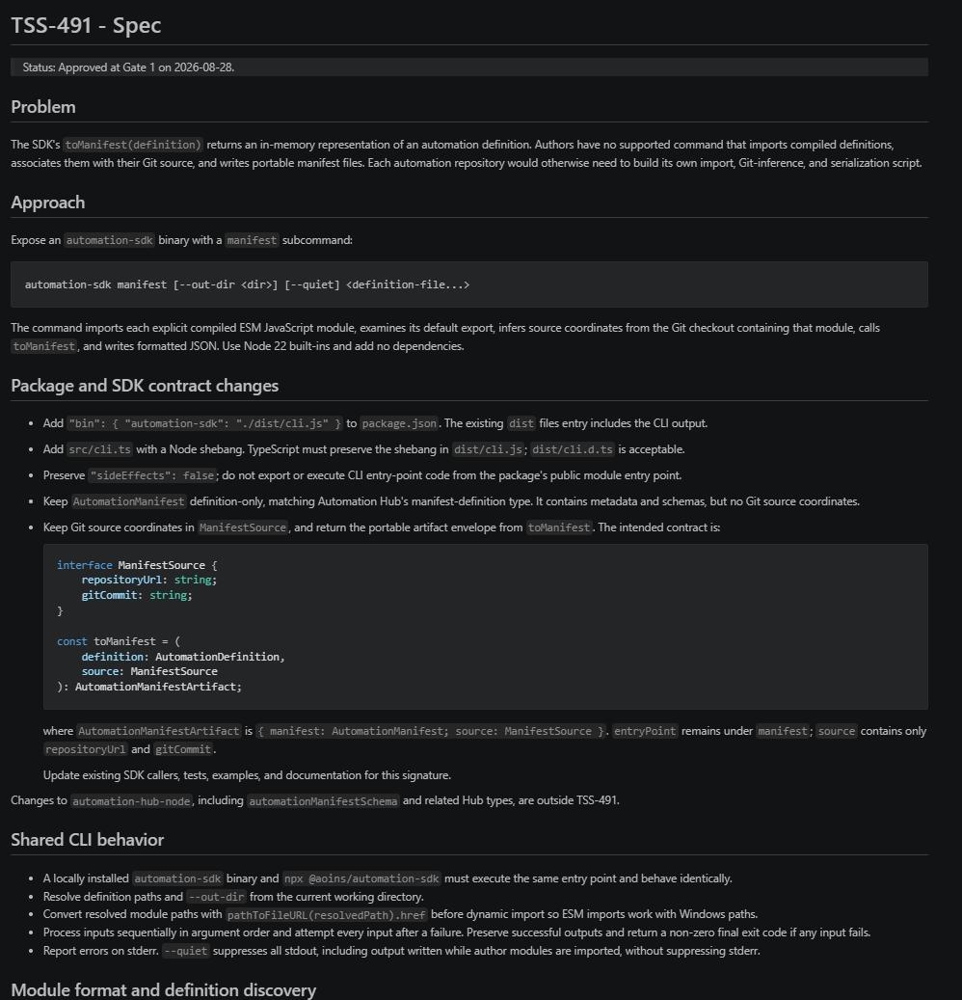
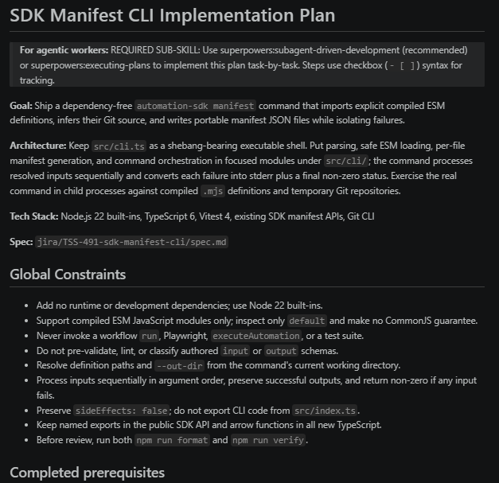
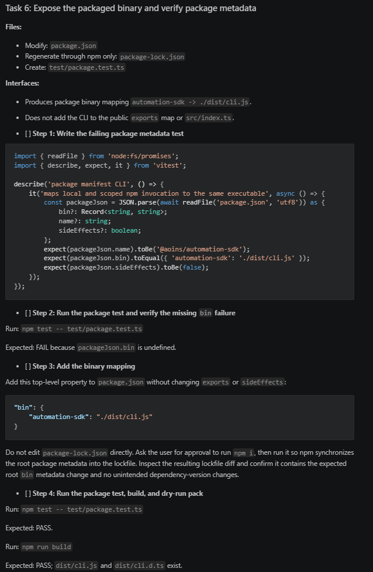

Superpowers
Skills for AI-Driven Development
X by 2 Tech Talk · 2026
What is a skill?
A folder of instructions that an agent pulls in on its own when a task looks relevant — not pasted in by you, not always loaded.
Not a command (you invoke those explicitly) and not an MCP server (that's a tool the agent calls) — a skill is judgment about when to bring in a procedure, packaged with the procedure itself.
How it works
my-skill/
├── SKILL.md # required: metadata + instructions
├── scripts/ # optional: executable helpers
└── references/ # optional: docs loaded on demand
--- SKILL.md ---
---
name: systematic-debugging
description: Use when encountering any bug, test failure,
or unexpected behavior, before proposing fixes
---
## The Process
1. Reproduce it. 2. Find the root cause. 3. ...1 · Discovery
At startup only name + description load
2 · Activation
Task matches the description → agent reads the full SKILL.md
3 · Execution
Scripts and reference files load only if actually needed
An open standard, quickly
- Oct 2025 — Anthropic announces Agent Skills for Claude
- Dec 2025 — Spun out as a vendor-neutral open standard: agentskills.io
- Within days — OpenAI adds Codex support; now 30+ agents: Claude Code, Codex, GitHub Copilot, VS Code, Cursor, Gemini CLI…
- Distribution — plugin marketplaces (Claude Code), community catalogs, git repos
Enter Superpowers
- A collection of 14 skills covering the full SDLC — brainstorm → plan → implement → verify → review → merge
- Philosophy: spec-first, test-driven, YAGNI, evidence over claims
- The agent doesn't jump to code — it teases out a spec, gets your sign-off, then plans and implements
The skill map
during implementation
between tasks
also available
Some skills hand off to each other in sequence, not ad-hoc — e.g. subagent-driven-development dispatches a subagent: a fresh, isolated agent instance sent to do one task and report back.
Brainstorming
Spike
"Can we…?" A feasibility question. Probe cheaply, report a recommendation. No documents.
Bounded
Well-scoped change to an existing flow. Short design in chat, approval, go. No plan doc.
Architectural
New projects / subsystems. Questions → approaches → written spec → implementation plan.
Every path stops for your approval before implementation — the ceremony scales, the gate doesn't.
The visual companion
- Optional local web UI the agent opens alongside the terminal during brainstorming
- Shows mockups, diagrams, side-by-side options — instead of describing UI in prose
- Offered just-in-time, only when a question is genuinely visual
- Caveat: can be token-intensive — worth it for UI-heavy work, skippable otherwise
From brainstorm to spec

writing-plans → subagent-driven development


- A fresh subagent per task; two-stage review (spec compliance, then code quality)
- Main session stays clean — implementation noise lives in the subagents
What we liked
- Structure — spike / bounded / architectural means the right amount of process per problem
- Approval gates — the agent stops and asks before building; fewer confident wrong turns
- Visual companion — seeing options beats reading descriptions of them
What to watch out for
- Model choice matters — know which model and effort level fits each stage; small models are fine for research, poor for development
- Token cost — thorough process = more input/output; the visual companion especially
- Durability — as coding agents get more sophisticated and gain more native features, skills like these — or this level of instruction detail — may not be needed anymore
- Subagent ergonomics — sometimes in-context work beats dispatching; knowing when is a judgment call the framework won't make for you